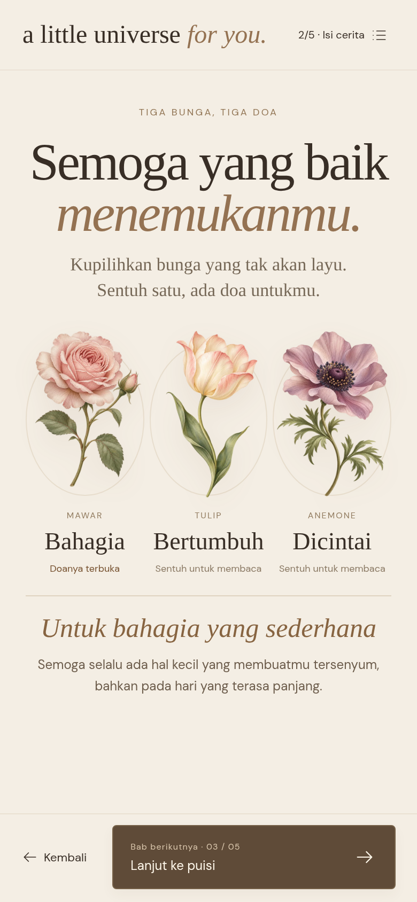
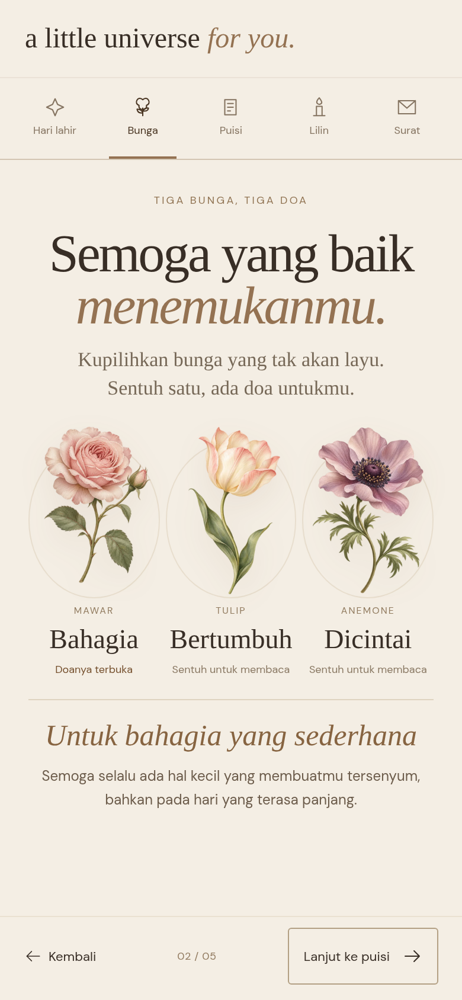
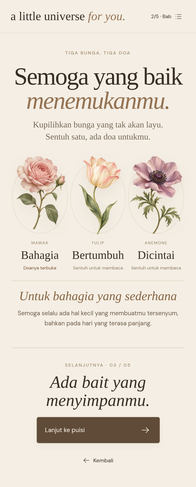

Urutan tetap: Hari lahirmu → Bunga & doa → Bait untukmu → Tiup lilin → Surat untukmu.
Yang berbeda adalah cara melanjutkan cerita. Foto pribadi, musik, dan web utama tidak diubah.
Satu tombol lanjut yang jelas. Bilah bawah ringkas, daftar isi tersedia saat dibutuhkan.

Semua tujuan langsung terlihat. Mudah kembali ke bagian favorit, sedikit lebih ramai.

Lanjut setelah selesai membaca. Gambar menampilkan satu bab penuh yang digulir.

A & B: contoh satu layar HP. C: satu bab penuh, termasuk undangan di akhir bacaan.
Ini tangkapan layar prototipe HTML yang benar-benar berjalan. Pilihan ini belum diterapkan ke website utama.